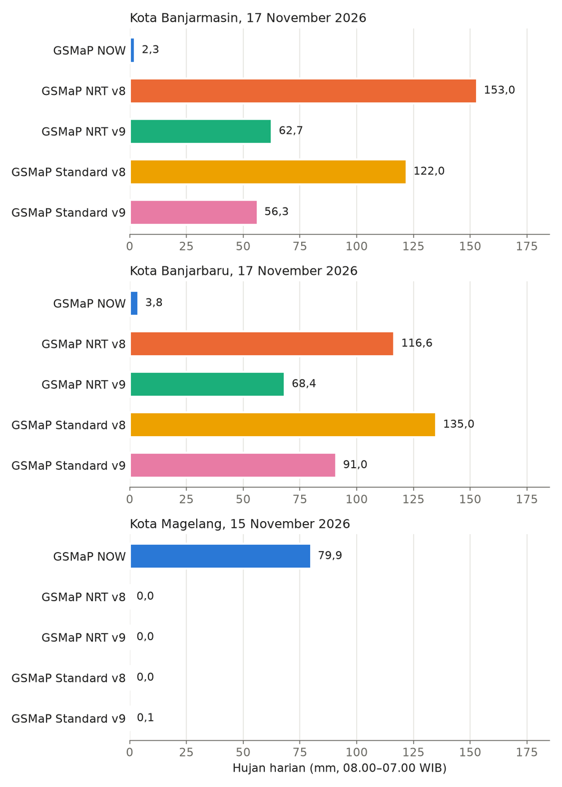
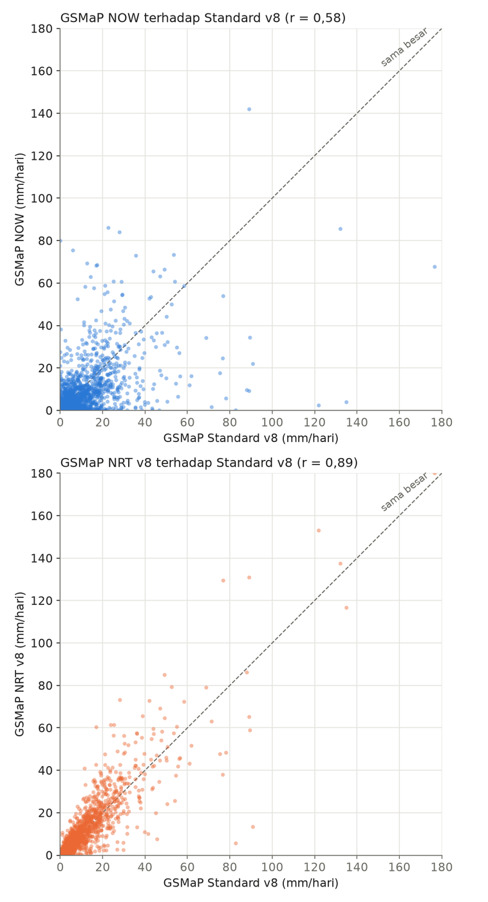

Daftar isi
Pada 17 November 2026, berapa hujan yang turun di Kota Banjarmasin? Tergantung produk satelit mana yang Anda buka. GSMaP NOW mencatat 2,3 mm, hampir kering. GSMaP NRT v8 mencatat 153 mm, hujan sangat lebat. Tiga produk lain menyebut angka di antaranya: 56, 63, dan 122 mm. Kelimanya berasal dari sistem yang sama, GSMaP milik JAXA, dan kelimanya tersedia di HESLab Portal. Tulisan ini menjelaskan mengapa angkanya bisa sejauh itu berbeda, seberapa sering itu terjadi, dan bagaimana sebaiknya membaca angka hujan satelit.
Lima produk dari satu sistem
GSMaP (Global Satellite Mapping of Precipitation) memperkirakan hujan dari gabungan banyak satelit: sensor gelombang mikro yang "melihat" butir hujan, dan citra inframerah yang memantau awan. Hasilnya peta hujan per jam dengan sel sekitar 11 km. HESLab mengolah lima produknya menjadi hujan harian per kabupaten/kota, dari pukul 08.00 sampai 07.00 WIB hari berikutnya.
| Produk | Tersedia setelah hujan | Cara kerja singkat |
|---|---|---|
| GSMaP NOW | 0 jam menurut JAXA | ekstrapolasi citra satelit terkini |
| GSMaP NRT v8 dan v9 | sekitar 4 jam | pemrosesan cepat data multi-satelit |
| GSMaP Standard v8 dan v9 | sekitar 3 hari | pemrosesan penuh, data satelit paling lengkap |
Ada dua hal yang sama pada kelimanya. Pertama, tidak satu pun dikoreksi dengan penakar hujan di darat; yang dibandingkan di sini murni perkiraan satelit. Kedua, makin lama sebuah produk menunggu, makin banyak lintasan satelit yang sempat masuk ke hitungannya. NOW harus menjawab "sekarang" dengan data yang ada saat itu, sehingga sebagian hujannya adalah tebakan ke mana awan akan bergerak. Standard menunggu sekitar tiga hari dan memakai semua data yang terkumpul.
Huruf v8 dan v9 adalah versi algoritma. Versi 9 dirilis JAXA pada 19 Oktober 2026, sehingga arsipnya baru dimulai Oktober 2026. Perbedaan kedua versi akan dibahas tersendiri; tulisan ini memusatkan perhitungan pada tiga produk versi 8.
Tiga contoh dari pekan lalu

Di Banjarmasin dan Banjarbaru pada 17 November, NOW hanya mencatat 2 sampai 4 mm, sementara NRT v8 dan Standard v8 sama-sama mencatat lebih dari 100 mm. Produk yang lebih lambat itu sepakat ada hujan besar; produk tercepat melewatkannya.
Kota Magelang pada 15 November adalah kebalikannya. NOW mencatat 79,9 mm, cukup untuk masuk kelas hujan lebat, padahal keempat produk lain mencatat nol. Salah satu penjelasan yang mungkin: ekstrapolasi NOW "memindahkan" awan hujan ke tempat yang ternyata tidak dilaluinya. Yang pasti, satu angka NOW seperti ini tidak cukup untuk menyimpulkan bahwa Magelang diguyur hujan lebat hari itu.
Seberapa sering mereka sepakat?
Contoh di atas dipilih karena perbedaannya paling besar. Untuk melihat gambaran umumnya, HESLab membandingkan ketiga produk versi 8 di seluruh 516 kabupaten/kota selama lima hari, 13 sampai 17 November 2026: 2.580 pasang nilai.

Hasilnya:
- NRT v8 dekat dengan Standard v8. Korelasinya 0,89, dan kelas hujannya sama pada 78 % kasus.
- NOW lebih kecil dan lebih acak. Rata-rata hujan harian NOW 5,5 mm, dibanding 7,0 mm pada Standard v8. Korelasinya dengan Standard hanya 0,58, dan kelas hujannya sama pada 58 % kasus.
- Ketiganya berada di kelas yang sama hanya pada sekitar separuh kasus (52 %).
- Hujan lebat paling sering diperdebatkan. Ada 72 kasus yang dicatat lebat (50 mm atau lebih) oleh setidaknya satu produk, tetapi hanya 6 yang dicatat lebat oleh ketiganya. Dari 31 kasus lebat menurut Standard v8, NRT v8 juga mencatat lebat pada 17 kasus, NOW hanya pada 7.
Kelas yang dipakai sama dengan peta portal: tidak hujan, sangat ringan, ringan (5–20 mm), sedang (20–50 mm), lebat (50–100 mm), sangat lebat (100–150 mm), dan ekstrem (di atas 150 mm).
Jadi, mana yang benar?
Tanpa penakar hujan di lokasi, tidak ada yang bisa memastikan. Standard memakai data paling lengkap, sehingga wajar dijadikan acuan antarproduk seperti di atas, tetapi Standard pun tetap perkiraan satelit. Dalam kajian HESLab di Kota Pontianak, satelit menangkap waktu hujan dengan baik, tetapi sering mencatat besarnya jauh lebih kecil daripada penakar.
Yang bisa dipegang adalah polanya:
- NOW berguna untuk mengetahui bahwa sedang hujan dan kira-kira di mana, bukan untuk menyebut berapa milimeter. Angka NOW yang menyendiri, besar atau kecil, sebaiknya ditunggu konfirmasinya.
- NRT adalah angka cepat yang paling layak dikutip, beberapa jam setelah hujan. Untuk hujan sedang ke bawah, nilainya biasanya dekat dengan Standard.
- Standard adalah angka untuk catatan dan analisis, misalnya rekap bulanan atau kajian banjir, karena prosesnya paling lengkap.
- Bila produk-produk tidak sepakat, terutama pada hujan lebat, perlakukan angkanya sebagai rentang, bukan satu nilai pasti, dan bandingkan dengan pengamatan BMKG atau laporan di lapangan.
Membandingkan sendiri di portal
Sejak 22 November 2026, panel kabupaten/kota di laporan hujan harian HESLab Portal memuat tabel Produk lain pada tanggal ini. Klik satu kabupaten/kota, lalu lihat hujan harian wilayah itu menurut kelima produk sekaligus. Produk Standard bertanda "belum tersedia" bila tanggalnya belum lewat sekitar tiga hari. Nama tiap produk di tabel itu menaut ke halamannya, dengan wilayah dan tanggal yang sama.
Kapan data tiap produk terakhir diperbarui dapat dilihat di halaman Status data.
Rujukan
- JAXA Global Rainfall Watch (GSMaP), Earth Observation Research Center, JAXA. https://sharaku.eorc.jaxa.jp/GSMaP/
- Kubota, T. dkk. (2020). Global Satellite Mapping of Precipitation (GSMaP) Products in the GPM Era. Dalam: Satellite Precipitation Measurement, Springer.
- Data: laporan hujan harian per kabupaten/kota HESLab Portal, 13–17 November 2026, diolah HESLab dari GSMaP NOW, NRT v8, dan Standard v8.